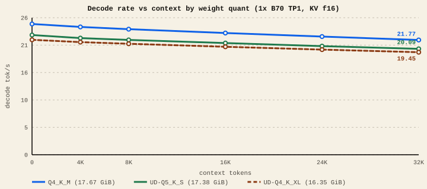
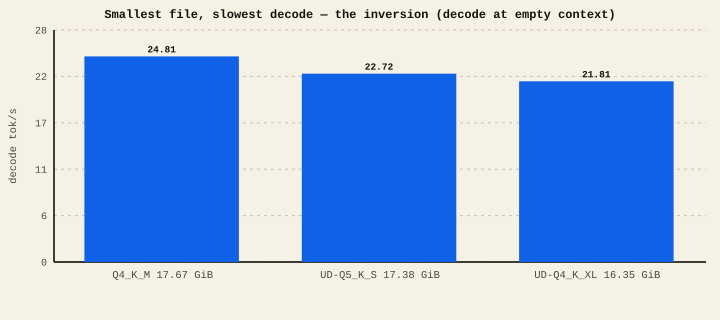

The short version
- Quantization stores each weight in fewer bits (16 → 8 → 5 → 4). Smaller file, a little less accuracy.
- Decode is mostly limited by how many bytes of weights the GPU reads per token — so smaller usually means faster.
- But not always. On our Q4_K-tuned lane, plain Q4_K_M (the largest of three files) decoded fastest, and the smallest file decoded slowest — because Q4_K_M hits a hand-tuned kernel the others miss.
- Quantization can also change answers. Always check quality, not just speed.
What quantization is
A model's "weights" are billions of numbers. Stored at full 16-bit precision, Qwen3.8-27B is about 54 GB — too big for a 32 GiB card. Quantization rounds those numbers into fewer bits so the model fits and loads faster. The trade is a small loss of precision, which usually costs a little quality.
Decoding the names
- Q4_K_M, Q5_K_S, Q6_K, Q8_0 — llama.cpp GGUF formats. The number is roughly bits per weight (4, 5, 6, 8).
_Kmeans k-quant (smart per-block scaling);_S/_M/_Lis small/medium/large within that. UD- prefixes (unsloth "dynamic") mix precisions per-tensor — more bits on the tensors that matter. - INT4 (AutoRound / GPTQ) — 4-bit integer formats used by GPU runtimes like vLLM. Great size, but the recipe matters for quality.
- FP8 — an 8-bit floating format, often used for the official weights on the vLLM XPU path.
Rule of thumb for quality: Q8 ≈ lossless, Q5/Q6 are a very safe middle, Q4 is the popular size/quality sweet spot, and below Q4 you start to feel it.
The surprise: smaller isn't always faster
We ran three Qwen3.8-27B files through the exact same single-card B70 lane, same settings, KV f16, context 0 → 32K. Lab-measured
Decode rate by weight quant

The inversion, at a glance

| Weight file | Size | Decode @ 0 | Decode @ 32K |
|---|---|---|---|
| Q4_K_M (plain) | 17.67 GiB | 24.81 | 21.77 |
| UD-Q5_K_S | 17.38 GiB | 22.72 | 20.09 |
| UD-Q4_K_XL (smallest) | 16.35 GiB | 21.81 | 19.45 |
Decode speed isn't only about bytes read — it's about how fast the kernel that reads them runs. Our lane is specifically tuned for uniform Q4_K (a reordered, fused fast path). Plain Q4_K_M is uniform, so it rides that path. The unsloth UD "dynamic" quants mix several block types per tensor, so they fall back to more general, slower code. The smaller download didn't help because the bottleneck moved from memory to the kernel.
This is a property of our tuned build, not a universal ranking of the formats. On a stock upstream backend the UD quants might rank differently, and on a card with less memory bandwidth the size difference would matter more. The transferable lesson is the mechanism: match your quant to the kernel your runtime has optimized. When in doubt, the widely-supported plain Q4_K_M is a safe, fast default here.
Speed is not the only axis — check the answer
A quant can be fast and still be wrong. We keep a tiny code-result canary (a prompt whose correct answer is 14). Our Q8 and Q4_K weights answer it correctly; a GPTQ INT4 build we tested answered 30 — fast, but wrong on a deterministic task. That's why our leaderboard treats such a route as experimental, not a default, no matter its tok/s.
For a single B70, Q4_K_M is the sweet spot: it fits comfortably, it's the fastest on our lane, and it passes our full quality battery (it's the promoted 27.8 tok/s package). Step up to Q5/Q6/Q8 if you want extra quality headroom and can spare the memory — just don't assume the bigger file is slower until you've measured it, and never adopt a quant on speed alone without a quality check.